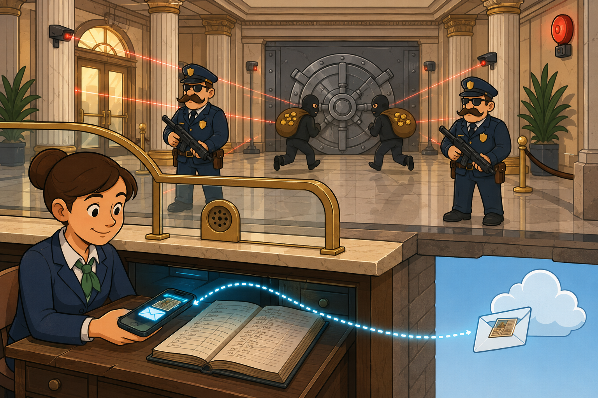
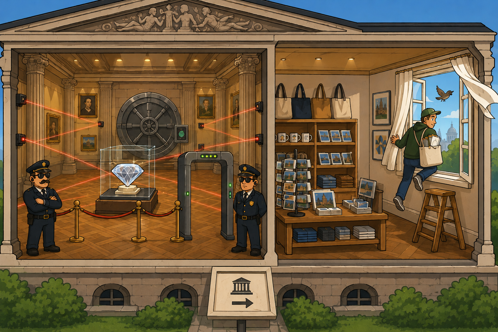
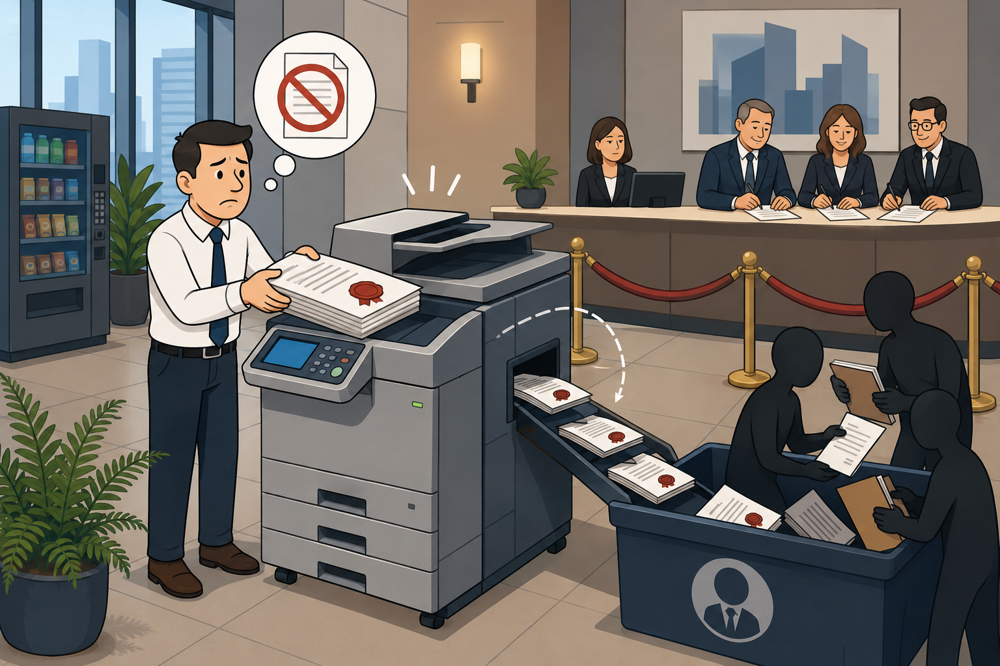

Study Guide — The AI Data Security Challenge · EDU-111
The AI Data Security Challenge
Why traditional controls fail, the three security gaps AI creates, the data risks employees generate every day, and what Shadow AI means for governance.
The threat is no longer only external.
Employees using AI tools to be productive are unknowingly creating data exposure risks that traditional controls cannot see. Understanding the gap is the first step to closing it.
💭THINK FIRST · WHY THE OLD CONTROLS GO QUIET
Imagine a senior analyst pasting a customer list into a chatbot on her lunch break. No file leaves the laptop. No alert fires. The DLP dashboard stays green. The data is already gone — and the tools that were supposed to stop this never noticed it happen.
If pasted text is not a file, what exactly is your DLP scanning for — and what is it missing every day?
When an employee opens ChatGPT in a personal browser tab, which corporate identity control gets a chance to see the request?
Why does an absence of malicious intent make this risk harder to govern, not easier?
Q1 — MODEL ANSWER
DLP is scanning for file objects — attachments, uploads, named documents leaving managed endpoints — and for keyword or fingerprint matches inside those files. What it misses every day is the clipboard channel: a copy-paste into a browser-based AI prompt that never instantiates as a file, never traverses an inspected egress path, and therefore never triggers a rule. The sensitive content moves as ephemeral text inside an HTTPS session.
Q2 — MODEL ANSWER
Effectively none. Personal-account access to a consumer AI tool bypasses SSO entirely, so corporate identity providers, conditional access policies, and access logs never see the session. The only thing the corporate stack registers is encrypted egress to a permitted SaaS domain — which looks identical to legitimate consumer traffic.
Q3 — MODEL ANSWER
Insider-threat programs are designed to detect signals of intent: unusual hours, mass downloads, exfiltration patterns. A well-meaning employee pasting a customer list to "summarise it faster" produces no anomaly to flag. The behaviour looks productive, the user remains compliant in spirit, and governance has nothing to escalate — which is precisely why it scales invisibly.
THE CHALLENGE
Why traditional security wasn't built for AI
Traditional security was built around a world where data moves as files, through managed accounts, over inspectable network traffic. AI has changed all three of those assumptions.
When a person pastes a customer list into a public AI tool to save time, there is no file transfer. The DLP sees nothing. When they access that tool through a personal account, the request travels over HTTPS. The firewall sees a destination, not the content.
The core problem: This is not a story about malicious insiders. Most people using AI tools at work are trying to save time and do their jobs well. The problem is that the security controls watching for threats were never designed to see AI as a risk vector.
Most employees are already using AI tools as part of their daily work. Yet formal AI security policies remain rare. The gap between AI adoption and AI governance is not theoretical — it is happening on every ordinary workday.
!
THE GOVERNANCE GAP
Most employees regularly use public GenAI tools for work tasks. Very few organisations have formal AI security policies in place. A significant gap exists between AI adoption speed and governance readiness. The risk does not require malicious intent — it requires only that someone pastes the wrong thing into the wrong tool on an ordinary Tuesday afternoon.
📷 1.png will appear here once you add it to this folder
Generate: flat amber minimalist illustration of a glass office building at night where employees at desks have softly glowing speech bubbles floating up through the ceiling, drifting past a watchful security guard who is looking only at the front door — warm amber and cream palette, no text labels
Analogy
A bank built every wall, vault and alarm to stop intruders carrying gold out of the front door. AI is the moment a teller starts photographing the ledger and emailing the pictures from her phone — same building, same locks, but the value is now leaving in a form the architecture was never asked to watch.

📷 A1.png — add this image to the folder
Flat minimalist cartoon illustration of a classical bank interior cut in cross-section as an analogy for AI changing the shape of data exfiltration. Heavy marble columns, polished floors, a massive round steel vault door at the back, laser tripwires and motion sensors aimed at the front entrance, alarm bells, armed guards with comically big moustaches all facing the front doors watching for masked robbers carrying sacks of gold coins. In the foreground at a teller's window: a friendly-looking teller smiling innocently, but with her phone held discreetly under the counter taking photographs of an open leather-bound ledger; on her screen we see an email envelope icon flying out the window into the cloud, carrying a tiny photo of the ledger pages. The guards and sensors are oblivious because nothing is moving toward the front door. Soft warm lobby lighting contrasted with a cool digital glow from the phone. Clean geometric shapes, flat illustration style, bold outlines, simple cartoon characters, no text labels, no UI elements, educational infographic feel, modern tech-analogy aesthetic.
🧠
MENTAL NOTE
The AI data risk is structural, not malicious. Controls did not break — the assumptions underneath them did. Expect exam questions framed around "well-intentioned employee on an ordinary day," not insider threats.
ASK A QUESTION
MY NOTES
💭THINK FIRST · THREE BLIND SPOTS WORKING AS DESIGNED
Three controls that have protected enterprise data for two decades — DLP, identity, and the firewall — all share one quiet assumption: that data moves as a file, through a managed account, over inspectable traffic. AI quietly violates every one of those assumptions, and the controls keep reporting green.
If a customer list is pasted into a prompt and never saved as a file, which signal would your DLP need that it does not currently collect?
What does your SSO log look like when an engineer signs in to a public AI tool with a personal Gmail account on a corporate laptop?
Your firewall sees the destination of an AI request — but what is sitting inside that TLS tunnel that it cannot read?
Q1 — MODEL ANSWER
DLP would need browser-level visibility — instrumentation that inspects the contents of paste events and outbound POST bodies destined for AI services, then matches them against the same classifiers used on files. Without an inline AI-aware proxy or endpoint browser agent, no signal is collected because the data never crystallises as a file artifact. This is the Clipboard Gap in one sentence.
Q2 — MODEL ANSWER
The SSO log shows nothing. The engineer never authenticated through corporate identity — they used a private credential against a consumer tenant, so the IdP has no event to record. You will only see the corporate device's network egress, not the user, not the session, not the action. That is the Identity Gap: no audit trail, no enforcement point.
Q3 — MODEL ANSWER
Inside the tunnel is the prompt itself — potentially proprietary source code, customer PII, contract terms, M&A figures, regulated health or payment data. The firewall reads only the SNI or destination URL; the payload is opaque without TLS inspection plus AI-content classification. That blind interior is the Encryption Gap.
THE THREE GAPS
Why traditional security controls fail against AI
Security controls that worked reliably for years are now encountering behaviour they were not built to detect. Three specific gaps explain how this happens.
Gap 1 of 3 — The Clipboard Gap
DLP tools scan for file transfers. Pasting text into an AI prompt is not a file transfer.
LEGACY VIEW
DLP tools scan for file uploads, email attachments, and network transfers to catch sensitive data moving out of the organisation.
AI REALITY
When an employee pastes a customer list directly into an AI tool, there is no file. The transfer happens invisibly, as text in a browser session. DLP sees nothing.
Gap 2 of 3 — The Identity Gap
Identity controls rely on corporate accounts. AI is frequently accessed through personal ones.
LEGACY VIEW
SSO and managed account policies ensure that access to tools and data happens through identities the organisation can see and govern.
AI REALITY
Employees frequently access AI platforms through personal accounts. This sits entirely outside corporate identity controls, leaving no audit trail and no enforcement point.
Gap 3 of 3 — The Encryption Gap
Firewalls can see where traffic is going. They cannot read what is inside an encrypted prompt.
LEGACY VIEW
Firewalls inspect HTTP traffic and block known harmful destinations based on domain category or threat reputation.
AI REALITY
All traffic to AI platforms travels over HTTPS. The firewall sees the destination. It cannot read the proprietary code, customer data, or regulated information inside the prompt.
★
THE KEY INSIGHT
Three blind spots. Each one invisible to tools that are working exactly as designed. AI has not broken the controls — it has changed the assumptions those controls were built on.
📷 2.png will appear here once you add it to this folder
Generate: flat amber minimalist illustration of three security cameras mounted on a wall, each looking confidently in one direction — but the data is flowing through three glowing keyholes between them, perfectly in the cameras' blind spots, warm amber and cream palette, no text labels
Analogy
It's like a museum that installed motion sensors, fingerprint locks, and metal detectors — then hung an open window in the gift shop. Every legacy control is doing exactly what it was designed for. The window is simply somewhere nobody thought to watch.

📷 A2.png — add this image to the folder
Flat minimalist cartoon illustration of a stately museum cut in cross-section as an analogy for legacy controls missing a new exfiltration channel. Left wing: a grand exhibition hall with a glittering diamond on a marble pedestal, criss-crossing red laser tripwires, glowing motion sensors, a fingerprint-lock pad on the vault door, a metal-detector archway and uniformed guards with peaked caps standing alertly — all controls clearly working perfectly. Right wing: a cosy little museum gift shop selling tote bags and postcards, and on its back wall a wide-open sash window with curtains fluttering in the breeze, a stepladder propped underneath; a casual visitor strolls out through this window carrying a souvenir bag stuffed with sensitive documents while a small bird flies in. Nobody is watching this side. Marble columns, parquet floors, a museum information sign with an arrow icon. Warm gallery lighting versus soft daylight from the window. Clean geometric shapes, flat illustration style, bold outlines, simple cartoon characters, no text labels, no UI elements, educational infographic feel, modern tech-analogy aesthetic.
🧠
MENTAL NOTE
Memorise the three gaps by what they cannot see: Clipboard = no file, Identity = no corporate account, Encryption = no readable payload. If an exam scenario describes one of these blind conditions, name the matching gap.
ASK A QUESTION
MY NOTES
💭THINK FIRST · WHAT YOU'RE ACTUALLY HANDING OVER
Three categories of harm — data leakage, IP exposure, compliance violation — none of them require a bad actor. Each one begins with a helpful employee, a public prompt box, and a sentence that sounded harmless until it left the laptop.
Once a customer record is in a public AI provider's training pipeline, what mechanism exists for your organisation to recall it?
If a developer pastes proprietary pricing logic to "optimise this code," how would you ever know that competitive advantage had left the building?
Under GDPR or HIPAA, does the regulator care whether the employee meant to breach policy — or only that regulated data crossed an unapproved boundary?
Q1 — MODEL ANSWER
None that is contractually or technically reliable. Consumer AI providers do not generally accept third-party data subject deletion requests for inputs already absorbed into a training corpus, and even where retention controls exist, the organisation has no audit visibility to prove deletion. The pragmatic assumption is that submission equals permanent loss of control — there is no recall slip.
Q2 — MODEL ANSWER
In most enterprises today, you would not know — and that is the point. Without inline AI inspection, the paste leaves no log, no DLP event, no SSO record. The IP loss only surfaces later, sometimes years later, when a competitor ships something suspiciously similar or a model's outputs to other users start echoing your proprietary patterns. By then, attribution is impossible.
Q3 — MODEL ANSWER
The regulator cares about the act, not the intent. Under GDPR, processing personal data on an unapproved processor without a lawful basis or DPA is a violation regardless of motive; under HIPAA, disclosing PHI to a non-BAA vendor is a breach. The employee's good intentions are mitigation at best — they do not erase the regulatory event of submission.
WHAT ARE WE RISKING
Three categories of real data risk
The governance gap between AI usage and AI policy is not abstract. When employees use public AI tools without organisational oversight, three categories of risk emerge — each with direct legal, regulatory, and competitive consequences.
RISK 1 OF 3
Data Leakage
Sensitive data pasted into a public AI tool can be retained or processed by that platform. Once submitted, the organisation has no control over what happens to it. There is no recall, no deletion guarantee, no audit trail.
EXAMPLE PROMPT THAT CREATES RISK
"Analyze this customer list: John Doe, SSN: 123, account balance: $142,000..."
RISK 2 OF 3
IP Exposure
Proprietary source code, pricing models, or strategic plans shared for AI assistance can expose competitive advantage. There is no reliable way to retrieve that information once submitted. The competitive damage may not be visible until a competitor launches something familiar.
EXAMPLE PROMPT THAT CREATES RISK
"Optimize this code: def proprietary_pricing_model(tier, volume): ..."
RISK 3 OF 3
Compliance Violation
Regulated data submitted to an unapproved AI service can trigger violations under GDPR, HIPAA, or PCI-DSS — even when the employee had no intent to breach policy. Intent is irrelevant to the regulator. The violation is the act of submission.
EXAMPLE PROMPT THAT CREATES RISK
"Translate this patient record to Spanish: Patient: Maria Garcia, DOB: 04/15/1978..."
Analogy
Submitting sensitive data to a public AI tool is like dropping a confidential file into a public photocopier you do not own, in a lobby you cannot enter, run by a company that never signed your NDA. There is no recall slip. The copies that already printed are someone else's now.

📷 A3.png — add this image to the folder
Flat minimalist cartoon illustration of a strange office lobby photocopier as an analogy for submitting sensitive data into a public AI. Central scene: a worried businessman in a tie standing in front of a large pay-per-use photocopier in a public lobby of an unfamiliar corporate tower (potted ferns, vending machine, indifferent receptionist behind a tall counter, "members only" velvet rope blocking the back of the room). He is feeding a stack of clearly confidential papers stamped with a red wax seal into the photocopier. The machine is humming and spitting out duplicate copies — but the duplicates are sliding out through a hidden chute in the back into a giant collection bin labelled with a generic faceless corporate logo, where unseen strangers (cartoon shadows) are scooping the copies into folders. Behind the lobby counter the original owners of the copier are signing contracts that pointedly do NOT include the businessman. A small red "no recall" symbol (a slip of paper with a strikethrough) hovers near him. Mood of awkward irreversibility. Clean geometric shapes, flat illustration style, bold outlines, simple cartoon characters, no text labels, no UI elements, educational infographic feel, modern tech-analogy aesthetic.
🧠
MENTAL NOTE
Three risks, three keywords: Leakage = PII / customer data; IP = code, pricing, strategy; Compliance = regulated data under GDPR / HIPAA / PCI-DSS. Intent is irrelevant for compliance — submission is the violation.
ASK A QUESTION
MY NOTES
💭THINK FIRST · THE 90% YOU CANNOT SEE
For every AI tool your security team has approved, roughly nine others are already running in your environment — opened in personal browser tabs, signed in with private email addresses, leaving no logs behind. The sanctioned tools are the tip; the iceberg is doing the work.
If asked today, could your IT team produce a list of every AI tool actually being used across your workforce — or only the ones they approved?
What does "audit trail" mean when an employee logs in to an AI service through a personal account on a personal device?
Why is the speed of Shadow AI adoption faster and harder to detect than the Shadow IT wave that preceded it?
Q1 — MODEL ANSWER
Most IT teams can only produce the sanctioned list — the roughly 10% they procured and onboarded. The remaining ~90% lives in personal browser tabs, browser extensions, mobile apps, and BYO accounts that never touched a procurement workflow. Discovering it requires inline AI-aware traffic inspection and shadow IT analytics, not asset databases.
Q2 — MODEL ANSWER
Effectively nothing. There is no corporate identity in the transaction, no enterprise log of session start, and no record of what was submitted. The "audit trail" exists only inside the AI provider's consumer tenant, accessible to the individual user — not the organisation whose data may have crossed the wire. From a governance standpoint, the event is silent.
Q3 — MODEL ANSWER
Shadow IT historically required provisioning a service, sharing credentials, and often expensing a subscription — friction that created discoverable signals. Shadow AI requires a browser tab and a free account; there is no procurement footprint, no spend anomaly, no shared workspace. Add genuine productivity gains and natural-language interfaces that anyone can use, and adoption outruns governance by months, not quarters.
SHADOW AI
The AI your security team cannot see
Shadow AI is the use of AI tools by employees without IT approval or knowledge. It is the AI equivalent of shadow IT — except it moves faster, is harder to detect, and carries direct data risk from the first interaction.
SANCTIONED AI
Approved. Visible. Governed.
~10% of enterprise AI usage
Approved by IT and security teams
Access controlled through corporate accounts
Usage is logged and auditable
Data handling terms reviewed and accepted
SHADOW AI
Unsanctioned. Invisible. Ungoverned.
~90% of enterprise AI usage
Used without IT approval or knowledge
Accessed through personal or browser accounts
No logging, no audit trail, no visibility
Data terms unknown or unreviewed
!
THE SCALE OF THE PROBLEM
The approved tools are a small fraction of what is actually running. The majority of enterprise AI activity is happening outside the security team's line of sight. Every piece of data submitted through a Shadow AI tool is data the organisation has lost control of — without knowing it happened.
📷 3.png will appear here once you add it to this folder
Generate: flat amber minimalist illustration of an iceberg viewed from the side, the small tip above water lit warmly and labelled-looking but with no text, while the enormous mass below water is filled with faint shapes of chat bubbles and laptop silhouettes — warm amber and cream palette, no text labels
Analogy
Sanctioned AI is the lit corridor of the office at night. Shadow AI is the entire rest of the building, where lights are flicking on and off through doors you didn't realise existed — and the security desk is only watching the one corridor.
📷 A4.png — add this image to the folder
Flat minimalist cartoon illustration of a vast multi-storey office building at night seen in cutaway as an analogy for sanctioned versus shadow AI. The building has dozens of small rooms across many floors visible through windows. Only one single corridor is brightly lit — a clean, orderly hallway with a polished welcome sign, an approval-stamp icon, an employee calmly working at a sanctioned AI terminal under a spotlight. The rest of the building is dim: every other window shows different employees and contractors using personal phones, laptops and odd-looking gadgets, with random lights flicking on and off, hidden doors marked with question-mark icons, secret stairwells, broom closets repurposed as makeshift offices, even a rooftop tent. At ground level a sleepy night-shift security guard sits at a desk facing only the lit corridor on a single CCTV monitor; banks of other monitors next to him are switched off and dark. Mood of unseen sprawl. Moonlight outside. Clean geometric shapes, flat illustration style, bold outlines, simple cartoon characters, no text labels, no UI elements, educational infographic feel, modern tech-analogy aesthetic.
🧠
MENTAL NOTE
Sanctioned ≈ 10% (approved, logged, governed). Shadow ≈ 90% (personal accounts, no logging, unknown data terms). Lock that split — it is a high-probability exam recall question.
ASK A QUESTION
MY NOTES
💭THINK FIRST · CONFIDENT, FLUENT, AND WRONG
The model is not lying when it hallucinates — it is doing exactly what it was built to do: predict the next plausible token. The danger is not that the output is wrong. The danger is that it sounds so right that a smart professional forgets to check.
If a tool predicts language rather than retrieves facts, what is the meaningful difference between "an accurate answer" and "an answer that reads like an accurate one"?
Which AI outputs in your workflow get acted on, shared, or submitted without an independent verification step?
If hallucination is structural to how LLMs work, what kind of control closes the gap — better models, or better governance?
Q1 — MODEL ANSWER
An accurate answer is grounded in a verifiable source; a fluent answer is grounded in token probability. The LLM optimises for the latter and cannot, by architecture, distinguish between them. The meaningful difference is epistemic: one is true, the other is statistically average — and only external verification can tell which one you are holding.
Q2 — MODEL ANSWER
Honest answer: more than most teams realise. Drafted emails, client-facing summaries, legal citations, code suggestions, research write-ups, and exec briefings frequently move downstream after only a casual glance. Any output that influences a decision or leaves the building should be on a verification checklist — and most workflows do not have one yet.
Q3 — MODEL ANSWER
Governance. Better models reduce hallucination rates but cannot eliminate them because next-token prediction has no built-in truth function. The durable control is process: human-in-the-loop verification, source-grounded retrieval, citation requirements, and policy banning unverified AI output in regulated artefacts. The fix lives in the workflow, not the weights.
WHEN AI MAKES THINGS UP
Hallucination — the governance risk hiding in plain sight
AI does not retrieve facts. It predicts them. Most of the time that produces useful output. But when the model encounters a gap in its knowledge, it does not stop — it keeps generating. The following scenario shows what that looks like when the stakes are high.
THE ACTION
A professional uses a public AI tool to generate research references. The tool returns a confident, well-formatted list. The output is submitted without independent verification.
THE MECHANISM
AI does not retrieve facts. It predicts them. When it encounters a gap in its knowledge, it keeps generating — producing citations that look real, sound plausible, and do not exist. The output sounded credible. None of it was real.
THE RESULT
The fabricated references are discovered after submission. The professional faces sanctions and reputational damage. The AI performed as designed. Verification was absent.
Key lesson: Hallucination is not a bug that will be patched. It is how these models work. The control is governance, not better AI.
!
A GOVERNANCE MISTAKE, NOT A TECHNOLOGY MISTAKE
Trusting AI output without verification is not a technology mistake. It is a governance mistake. And the consequences are real — legally, reputationally, and operationally. Every AI output that will be acted upon, shared, or submitted must be independently verified.
→
WHERE THIS LEADS
You now understand the three security gaps AI creates, the three categories of data risk, what Shadow AI means at enterprise scale, and why hallucination is a governance problem. The next lesson introduces the Zscaler framework that addresses all of these systematically.
Analogy
An LLM is the colleague who never says "I don't know." Ask for a citation it doesn't have and it will invent one, formatted perfectly, with a confident smile. You wouldn't sign a legal filing based on that colleague's word alone — and the AI is exactly the same colleague, just faster.
📷 A5.png — add this image to the folder
Flat minimalist cartoon illustration of a law firm office as an analogy for LLM hallucinations and citations. Central scene: a polished, perfectly-groomed colleague in a sharp suit sitting at an oak desk with a wide confident smile and twinkle in his eye, holding up a freshly typed legal filing with elegant decorative letterheads, official-looking seals, and a long list of footnoted citations — but on closer inspection (shown with a small magnifying-glass inset) the case names are absurd nonsense (depicted as squiggly handwriting, not real text) and the dates are impossible. A second character, a worried young lawyer holding a pen near a signature line, hesitates with a sweat drop. Behind them: a bookshelf of weighty law tomes, a typewriter, an old grandfather clock spinning impossibly fast to suggest the AI's speed. A speech bubble from the smiling colleague contains a confident thumbs-up icon (never "I don't know"). Mood of charming overconfidence. Clean geometric shapes, flat illustration style, bold outlines, simple cartoon characters, no text labels, no UI elements, educational infographic feel, modern tech-analogy aesthetic.
🧠
MENTAL NOTE
Hallucination is not a bug awaiting a patch — it is a structural property of token prediction. The exam-correct control is verification and governance, not "wait for better AI." Every output that will be acted upon must be independently verified.